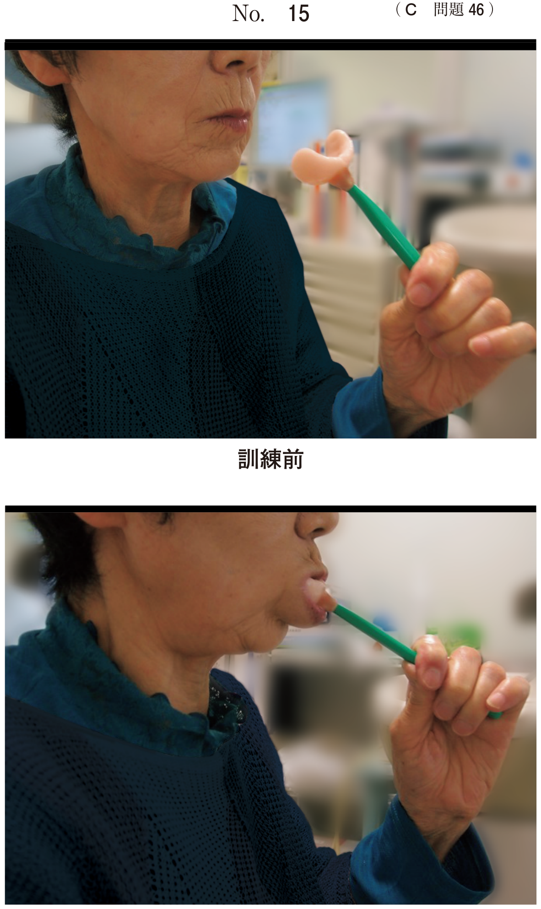

咬合調整
咬合治療の目的
咀嚼に必要な咬合運動やブラキシズムなどの習癖による咬合性外傷を除去し、歯周炎を増悪させないようにすること。
基本用語
| 用語 | 定義 |
|---|---|
| 外傷性咬合 | 咬合性外傷を生じさせる咬合（原因） |
| 咬合性外傷 | 咬合運動により歯と歯周組織に生じる外傷（結果） |
| 早期接触 | 咬頭嵌合位に至る過程で特定の歯が早期に接触すること |
| 咬合干渉 | 側方や前方運動などの偏心位において、正常な機能運動を障害する歯の接触状態 |
| フレミタス | 咬合時に歯が突き上げられる感覚・動揺 |
咬合性外傷に対する咬合調整の3原則
- 早期接触や咬合干渉の除去
- 過度の咬合力がかかる負担過重（主に臼歯の偏位力）の除去
- ブラキシズムによる過度な力のコントロール
BULLの法則（国試最頻出）
作業側で早期接触や咬合干渉の見られる歯の削合部位：
- 上顎：頬側咬頭内斜面（Buccal Upper）
- 下顎：舌側咬頭内斜面（Lingual Lower）
覚え方：BULL = Buccal Upper, Lingual Lower
Jankelsonの分類（咬頭嵌合位での早期接触）
| 分類 | 接触部位 | 削合部位 |
|---|---|---|
| I級 | 上顎頬側咬頭外斜面 vs 下顎頬側咬頭外斜面 | 外斜面を削合 |
| II級 | 上顎舌側咬頭内斜面 vs 下顎舌側咬頭内斜面 | 外斜面を削合 |
| III級 | 内斜面同士の接触 | 上顎舌側咬頭頬側斜面 or 下顎頬側咬頭舌側斜面 |
咬頭嵌合位の調整原則
- 早期接触をなくす
- 偏位力を少なくする
- 固有咬合面の大きさをなるべく小さくする
- 咬合面の咬頭傾斜を緩くする
動揺度別の対応
| 動揺度 | 対応 |
|---|---|
| 正常〜軽度 | 歯肉炎症の有無を確認。炎症があれば歯周基本治療後に再評価して咬合調整 |
| 2度以上 | ただちに暫間固定を併用して咬合の安定を図る |
ブラキシズムへの対応
咬合調整でブラキシズムを止めることは困難。歯周組織への障害を軽減するためにオクルーザルスプリントの使用が一般的。
関連過去問
112B61
二次性咬合性外傷を伴う正常被蓋の歯に対して咬合調整を行うこととした。
側方運動時作業側における削合部位はどれか。2つ選べ。
a 下顎頬側咬頭内斜面
b 下顎舌側咬頭内斜面
c 上顎頬側咬頭外斜面
d 上顎頬側咬頭内斜面
e 上顎舌側咬頭内斜面
b 下顎舌側咬頭内斜面
c 上顎頬側咬頭外斜面
d 上顎頬側咬頭内斜面
e 上顎舌側咬頭内斜面
正解：b, d
【解説】BULLの法則に従う。作業側で咬合干渉がある場合、上顎は頬側咬頭内斜面（Buccal Upper）、下顎は舌側咬頭内斜面（Lingual Lower）を削合する。「BULL」で覚える。
114C55
43歳の女性。下顎左側小臼歯部の違和感を主訴として来院した。2年前から内科で糖尿病の治療を受けているという。歯周基本治療終了後の再評価時のHbA1cは7.5％であった。再評価時の口腔内写真（別冊No.21A）とエックス線画像（別冊No.21B）を別に示す。再評価時の歯周組織検査結果の一部を表に示す。
次に行うのはどれか。2つ選べ。


a 骨移植術
b 抗菌薬の局所投与
c オクルーザルスプリントの装着
d スケーリング・ルートプレーニング
e エナメルマトリックスタンパク質の応用
b 抗菌薬の局所投与
c オクルーザルスプリントの装着
d スケーリング・ルートプレーニング
e エナメルマトリックスタンパク質の応用
正解：b, d
【解説】歯周基本治療後の再評価で残存ポケットがある場合、追加のSRPと抗菌薬の局所投与（LDDS）を行う。糖尿病患者ではHbA1c 7.5%は血糖コントロール不十分だが、歯周治療は継続可能。オクルーザルスプリントはブラキシズムの所見がある場合に検討。